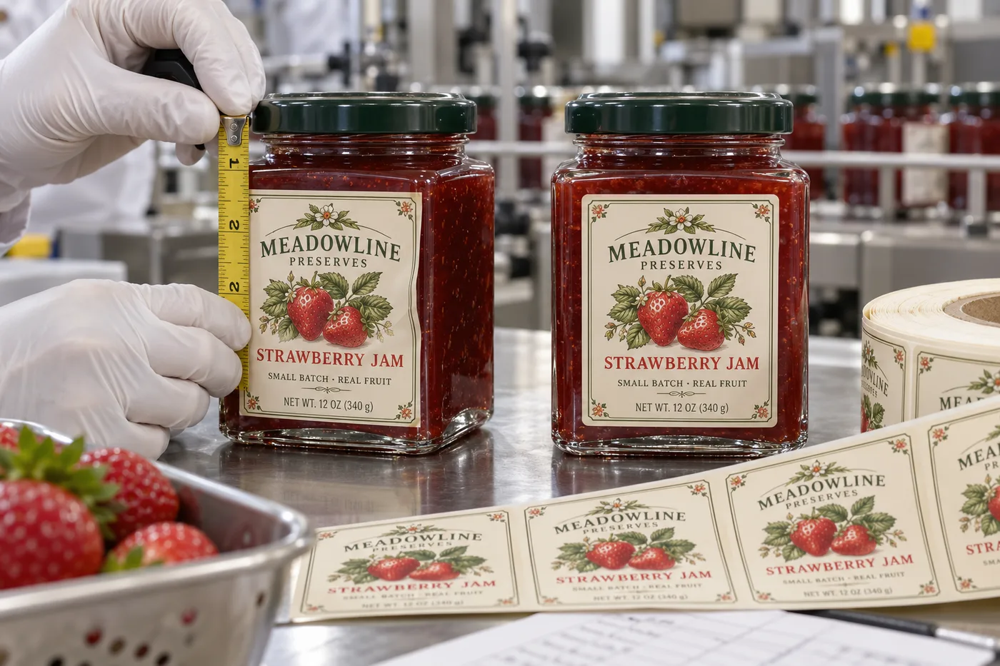

Approve the cut across the jar supply, with visible exceptions
A successful paper rectangle on one square jar does not establish the common cut for every supplier or mold in the purchase. Make a sample register before locking the die. The goal is to identify the proposed footprint that is represented by actual jars, including any exception that needs another size or placement instruction.
| Sample register field | What to retain | Decision supported |
|---|---|---|
| Glass identity | Supplier, jar reference and available lot/mold identification | Which incoming supply the sample represents |
| Usable face | Marked flat region, shoulder/base transitions and raised features | Actual space available for the proposed cut |
| Proposed footprint | Exact width, height, corner shape and drawing revision | A controlled physical cut rather than a printed border |
| Placement reference | Visible glass feature or agreed applicator reference | Repeatable positioning within that usable face |
| Edge observation | Views of both sides and top/bottom on identified jars | Where a footprint or position becomes questionable |
| Exception | Variant, unresolved condition and responsible decision | Shared cut, revised placement or separate proposal |
Do not average away the smallest usable panel
For a hypothetical jam range using two jar sources, the front widths can look similar while one mold brings the corner transition further into the label area. An average width does not describe a footprint that safely fits either jar. Compare a smaller common cut with a separate proposal for the restrictive variant, then review content capacity and application work for both options.
Do not reduce the cut after artwork approval without checking what moves. A changed border, barcode location or controlled copy block may require its owner's review. Nor should a raised seam automatically be diagnosed as the technical cause of every lifted edge. Record its relationship to the observation and evaluate the complete proposed construction under the relevant conditions.
Keep geometric approval distinct from construction approval
Use a scaled paper layout to resolve the first fit question, with the proposed outline and important artwork represented. Keep photographs tied to each sample identity. Then use the intended printed construction to evaluate the properties that paper cannot establish, including the agreed application and handling route. If the sample was carefully hand-applied, state that limitation before transferring its placement approval to a line.
After a common cut is accepted, retain the drawing and the represented glass references together. A replacement jar source should return to this register rather than inherit approval solely from the nominal fill volume. The tapered-container guide concerns a different shape problem; the lid/body guide allocates information between components. This register closes the square body's variation and exception decision.
The nominal jar width is not the printable panel
I like square jam jars because they present a clear front. But if a buyer gives me only the outside width, I cannot safely make the label nearly that wide. The corner starts curving before the edge of the jar. On some glass there is also a mold seam or slight raised area. A label that bridges it may trap air or lift at the corner.
This is a geometry judgment, not a claim that a particular adhesive always fails. Our illustration is fictional. The real answer comes from several physical jars from the intended supply.
Two jam brands, two sensible layouts
Imagine a composite farm-shop jam producer ordering short runs for three flavors. A narrower front label leaves a visible glass border. Its buyers can still see the fruit, and the same label size may work across the flavors. I would spend the budget on good color consistency rather than using every last millimeter of the panel.
Now imagine a composite premium preserve brand that needs more required copy on-pack. It may use a front brand label plus a separate back information label. That costs another application step, but it keeps the visual front clear and avoids folding dense copy over a corner. If hand labeling is the bottleneck, we would compare the labor trade-off before approving two labels.
Find the repeatable flat area
Place a paper rectangle on the jar and rotate it under normal light. Mark where the flat face begins to curve, then leave a visible safety margin. Do this on multiple jars, not just the prettiest sample. Check the label height against the shoulder, base and any molded decoration. With filled jars, confirm that the chosen panel is easy for the operator or applicator to locate consistently.
| What you see | Check first | Possible change |
|---|---|---|
| One side lifts near the corner | Position and corner radius | Narrow or recenter the label |
| Both sides show bubbles | Flat-panel width and application pressure | Trial a smaller printed construction |
| Label is flat but copy feels crowded | Information hierarchy | Move secondary copy to back |
| Only some jars vary | Glass lot and molded seams | Approve across incoming lots |
Test the printed material on filled jars
Print the actual design, face and finish for the trial. Thick textured stock may change how a corner behaves; clear film can reveal trapped air more readily. Check the package after filling, labeling, boxing and normal storage. For refrigerated products, include the real moisture and temperature conditions rather than assuming a dry bench test is enough.
Our buying view
Make the glass border work for you
I would not fight a square jar to squeeze in a few more words. A deliberately narrower front often looks more premium and is easier to apply. When the information truly needs space, we should price a front/back system honestly instead of hiding a poor fit inside a stronger adhesive quote.
What to send with the RFQ
- Jars from the current production glass lot.
- Desired front and back content, including required market wording.
- Target label position and application method.
- Expected refrigeration, moisture and handling.
- Photos of approved and unacceptable edges on filled jars.
Start with the general bottle and jar size guide, then compare front/back and wrap formats if the information will not fit.
Frequently asked questions
Can a rectangular label wrap around a square jar corner?
It can be considered only after a real-jar trial. A front label that stays on the flat panel is often simpler to apply and inspect.
Why does one corner lift?
The label may cross a changing radius, raised seam or a surface that did not receive consistent pressure. Check geometry before blaming adhesive.
Do I measure the filled jar?
Use production jars and filled-condition samples, because label positioning and handling should be approved on the pack that will be sold.
Related buyer guides
Continue with Jam Jar Lid Labels vs Body Labels: What Goes Where? for a focused purchase checklist.
Send the unresolved specification question
Include actual jar references from the intended supply, marked usable faces, proposed cut drawing, application method, quantities and exceptions.
Prepare a label specification inquiry. The contact form opens an email draft; review it and use the listed email or WhatsApp route for attachments. Available construction, sample scope, pricing and timing require confirmation for the actual job.